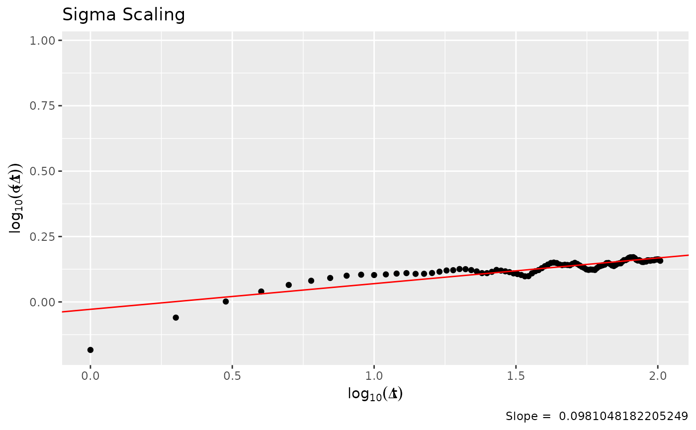

plot_sigma_scaling.RdPlots a scaling of the sd in the distribution of price changes across time lags and returns the value of the slope
plot_sigma_scaling(chain, plot = TRUE)Vector of n length, where n is the number of trials or sampler iterations
Boolean. Whether to return a plot or the elements used to make it.
If plot is true, a sigma scaling plot. If false, a vector with the standard deviations at each lag
Markets show sigma scaling exponents around 0.5.
set.seed(1)
chain1 <- sampler_mh(1, "norm", c(0,1), diag(1))
plot_sigma_scaling(chain1[[1]])

set.seed(1)
chain1 <- sampler_mh(1, "norm", c(0,1), diag(1))
plot_sigma_scaling(chain1[[1]], plot = FALSE)
#> [1] 0.6554206 0.8710101 1.0034985 1.0960127 1.1611904 1.2049326 1.2345926
#> [8] 1.2595104 1.2708884 1.2669402 1.2742124 1.2834349 1.2885459 1.2800990
#> [15] 1.2812005 1.2898789 1.3049639 1.3189057 1.3222918 1.3357071 1.3343457
#> [22] 1.3233383 1.3081025 1.2886969 1.2883123 1.3034216 1.3252610 1.3175539
#> [29] 1.3092352 1.3001075 1.2856377 1.2780053 1.2676980 1.2528074 1.2547195
#> [36] 1.2857501 1.3102554 1.3237884 1.3461923 1.3697272 1.3894854 1.4087657
#> [43] 1.4140893 1.4080247 1.3902201 1.3822379 1.3871251 1.3843969 1.3807283
#> [50] 1.3975809 1.4106889 1.3969380 1.3793140 1.3618938 1.3494642 1.3317206
#> [57] 1.3257360 1.3304557 1.3284470 1.3248134 1.3465174 1.3648130 1.3731731
#> [64] 1.3813399 1.3887305 1.4074104 1.4092117 1.3949106 1.3785142 1.3713388
#> [71] 1.3842391 1.3986769 1.4043774 1.4047372 1.4261118 1.4445472 1.4442605
#> [78] 1.4562652 1.4732892 1.4809510 1.4795165 1.4825966 1.4697102 1.4489517
#> [85] 1.4395264 1.4443550 1.4339104 1.4222052 1.4209442 1.4279155 1.4270024
#> [92] 1.4427819 1.4421180 1.4364234 1.4426135 1.4429096 1.4425540 1.4512988
#> [99] 1.4525725 1.4543142 1.4518143 1.4363062